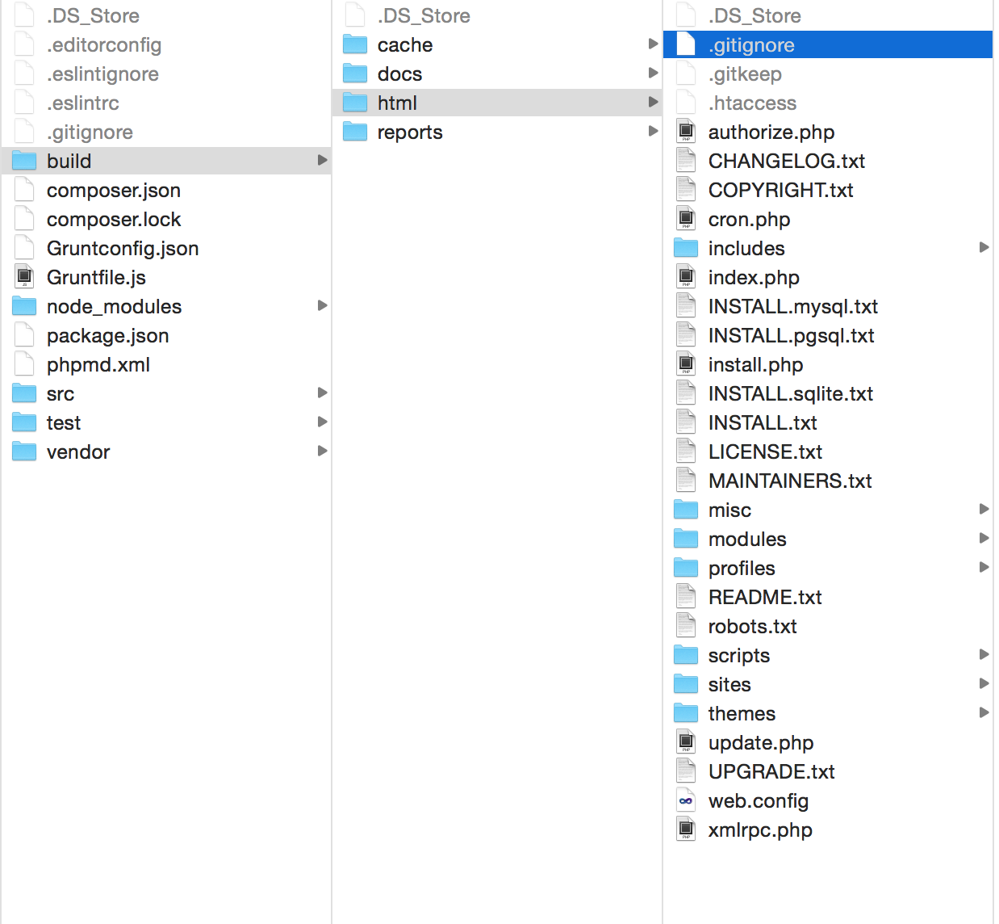
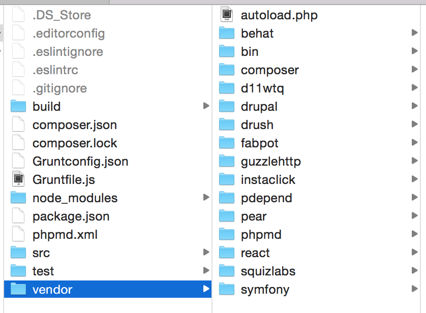
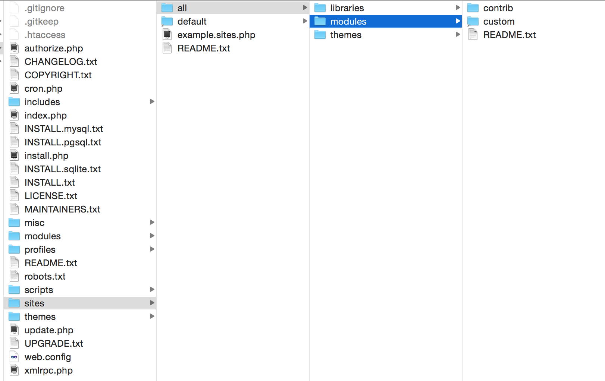

Drupal Grunt Task
Contruir y probar Drupal usando Grunt
Drupal Camp Costa Rica 2015
Quien Soy?
-
Daniel Noyola
- Correo: d.noyola@paralleldevs.com
- Github: danielnv18
- Twitter: @danielnv18
- Full Stack Developer
Construyendo Drupal
Desarrollo en Drupal
Descargar e instalar -> Agregar codigo -> Subir al servidor
Drush Make -> Codigo -> Confirmar codigo -> Compilar Sass -> Ejecutar Behat -> git commit
Porque Contruir Drupal?
- Drush make
- Dejamos de mezclar el codigo contribuido/core y codigo custom.
- Tenemos control de nuestras dependecias.
- Una manera simplificada de librerias y recursos.
- Reforzar la idea de automatizar.
Porque Probar Drupal?
- Sitios complejos necesitan ser probamos mas alla de uns cuantos clicks.
- Empoderar a los desarrolladores para producir codigo de calidad.
- Encontrar errores en el codigo antes de integrarlo.
Surgen Preguntas
- Como nos aseguramos que todos usan la mismas herramientas en la misma manera?
- Como separamos nuestro codigo fuente de las dependencias y crear un output corecto?
Grunt
Porque Grunt?
- Es un ejecutador de tareas basado en javascript
- Fuerte comunidad, flexible, ampliamente adoptado
- Solamente requiere node.js
- Tiene un enfoque simple: tareas en js, configuracion en JSON
- 4,000+ Plugin Contruibuidos
Grunt, Genial!
Tutorial en escribir un script en Grunt minificar JavaScript usando la herramienta "uglify"
Drupal Grunt Task

Drupal Grunt Task
https://github.com/phase2/grunt-drupal-tasks
grunt-drupal-task es un conjunto de herramientas que nos ayudan construir y probar (aka Testear) Drupal y otras herramientas comunes en Drupal
Tiene opiniones
- Aplica practicas en todo el equipo y el ambiente de CI (Continuous Integration)
-
Asume cierto flujo en el codigo
- Verificar la calidad del codigo custom
- Acoplar core y contrib con el codigo custom con Drush Make
- Ejecutar pruebas
Reune una serie de herramientas

Se queda fuera de tu camino
- Todas las tareas se pueden modificar
- Administra sus propias dependencias
- Las herramientas son faciles de usar
Comenzando
Dependencias
-
Antes de comenzar tenemos que estar seguros que tenemos
- node.js (npm)
-
Se recomienda para soportar el resto de herramientas
- Bundler, Composer, Ruby y RubyGems
-
Opcional
npm install -g generator-gadget grunt-cli yoyo gadget
Estructura del Projecto

Estructura del Projecto

Estructura del node_modules

Estructura del src/

Estructura del test

Estructura del SRC
Objetivos
- Acomodar (y aislar) el codigo custom, Drupal Core, codigo contribuido, archivos de configuracion y herramientas de soporte.
- Permitir a todas la herramientas trabajar en conjunto con el minimo esfuerzo.
- Estandarizar la estructura base de un projecto
Construyendo
Construccion del projecto
-
Utilizamos grunt para construir el projecto:
grunt
Pasos de contruccion
- Compass / Bundle
- Valida Codigo
- Drush make
- Inserta el codigo custom en el sitio
- Compilar el Tema
Directorio build/html
Directorio vendor
Directorio build/html
SymLinks?
- No hay necesidada de re-contruir despues de un cambio en el codigo
- La tarea "build" se encarga de que los Symlink esten correctos
- Los link son relativos a la aplicacion
- XDebug funciona con simlinks
- Usuarios de windows: CUIDADO!
Se ejecuta automatico
Ejecuta "validate", compila el tema, drush make (si es necesario) cuando un archivo es modificado
grunt watch
La forma de construccion
- Captura el flujo de trabajo diario
- Produce un sitio completo en Drupal desde codigo custom y un archivo make
- Contruido local, contruir sobre la integracion
Haslo a tu manera
- Las tareas de contruccion puede ser ejecutadas individualmente.
- Demosle un vistaso a las tareas predefinidas.
Validation
Validando la calidad del codigo
- Utiliza lints y analisis de codigo estatico para cuantificar la calidad del codigo
- Podemos ejecutar PHP Lint y PHP Code Sniffer (con los estandares de codigo de Drupal)
grunt validate
PHP Lint
Verifica la sintaxis con la herramienta integrada en php
PHP Code Sniffer
Verifica el estilo del codigo para que conicida con Drupal Code Standarts
Verifiquemos antes de
- Anima a los desarrolladores a validar el codigo antes de subirlo.
- Enfoca la arquitentura en revisiones de codigo.
- Rechazar el deployment o PR bajo ciertos parametros.
Compilando el tema
Herramientas Front-end
- Compass fue una de la primeras herramientas no-PHP comun en la implementacion de Drupal
- Puedes configurar GDT para definir la compilacion de los temas
grunt compile-theme
Compass
- Incluya el archivo Gemfile para instalar y para requerir gemas
- Compass compile es ejecutado durante la construccion del sitio
Grunt-to-Grunt
- Delegar tareas a los temas que estan basados en grunt.
- WIP (Work in progress)
Testing
Probando los "features" del sitio
- Probar de Behat, Extenciones Drupal y otras dependencias
- Probar el sitio con Behat requiere que Drupal este instalado y accesible por URL
- 2 opciones para ejecutar pruebas localmente
- Usando un ambiente local (Docker,VM, W/MAMP)
- Usando el servidor integrado en PHP/Drush
grunt drush:liteinstall
Ejecutando las pruebas
grunt test
Hacia BDD
- Primero se escriben las pruebas
- Codido interactua con el feedback de la prueba
- Se puede automatizar mediante la tarea watch
- Incluye herramientas y scripts de prueba para comenzar a probar
GDT suporta el fujo de trabajo de BDD/TDD
Empaquetamiento y despliegue (Deployment)
Deployment
- Esta hecho para desarrollo local y ambientes de integracion
- Prepara el codigo para el lanzamamiento
- Entrega el codigo a otras herramientas de deployment
Empaquetamiento
- Produce una version aislada, desplegable con Drupal
- Excluye herramientas de soporte y configuracion
grunt package
Liberando el codigo
Se esta explorando como se pueden soportar processos de liberacion (release)
- Commit el codigo a un repositorio (Acquia, Pantheon)
- Integrarlo con otras herramientas de release/deployment (Capistrano, ShipIt)
Configurando y extendiendo
Configuracion
- Opciones configurable en Gruntconfig.json
- La fuente y directorio de contruccion
- Opciones para ejecutar behat
- Argumentos a la ejecucion de Drush Make
- Opciones para la configuracion de los temas
- Incluir / Excluir archivos para el empaquetamiento
Extendiendo
La entension es posible a travez de cambios en Gruntfile.js
- Agregar nuevas tareas, reemplazar existentes
- Ejecutar un comando de consola como una tarea
- Sobre escribir los pasos por defecto para la construccion del sitio
Para Finalizar
Pruebalo
- Intenta usar Drupal Grunt Task en tu siguiente projecto
- Creat issue en GitHub para compartir como deberia funcionar mejor
- Parches son bienvenidos (a.k.a Pull Request en GitHub)
Roadmap
- Suportar mas herramientas de calidad de codigo (PHPunit Sass/js lint)
- Delegar para temas que hacen uso de grunt
- Mas opciones de releasing/deployment
- Contruir Drupal con composer
- Integracion con Drupal Console
Preguntas?
Codigo Usado para la presentacion https://github.com/danielnv18/gdt-drupalcamp-cr-2015